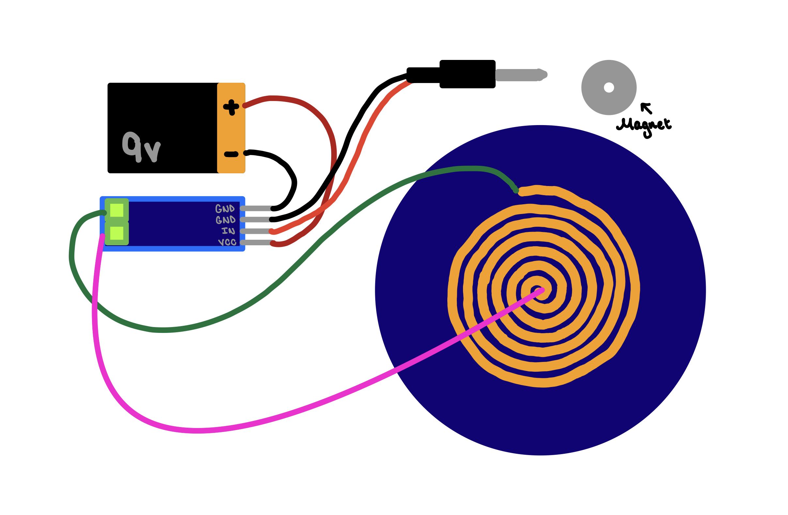

fabric speaker
May 13, 2022
Description
I crafted a speaker using conductive fabric! In the video demonstration above, my speaker is playing the audio from my video artwork, THIS IS THE DIGITAL AGE (AND EVERYTHING IS F*CKING ONLINE), 2021 .
To make this speaker, I connected the audio amplifier to the 9V battery and audio jack by soldering. I then applied iron-on adhesive onto the conductive fabric, laser-cut a coil pattern out of the fabric, and then ironed the coil pattern onto a non-conductive fabric. After soldering two wires onto the two ends of the coil and connecting these ends to the audio amplifier, the speaker was complete! I placed a magnet under the coil, plugged the audio jack to a device, and was able to play music out of the hand-crafted speaker.
I'm surprised at how simple this was to achieve, and I feel inspired to create more works that include hand-crafted speakers. I especially like how the speaker isn't too loud which forces the listener to get closer to the speaker. The act of leaning in to hear more clearly feels intimate.
In the future, I'd like to experiment with creating hand-crafted speakers of varying sizes and possibly crafting a sweater covered in speakers.

Fabric Speaker
Circuit
The circuit is achieved with the coil-shaped conductive fabric, an audio amplifier, audio jack, 9V battery, wire, and a magnet. When the audio jack is plugged in, the speaker works successfully!
Fabric Speaker Circuit
References
I learned how to craft this speaker while in class, but Kobakant has a great reference for fabric speakers!
-
Kobakant Fabric Speaker Swatch Example
Specifications
conductive fabric, iron-on adhesive, magnet, audio jack, 9V battery, audio amplifier, wire, non-conductive fabric